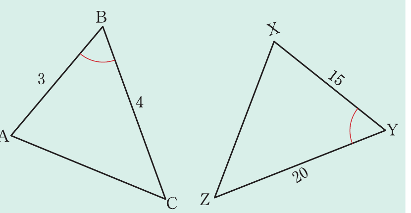
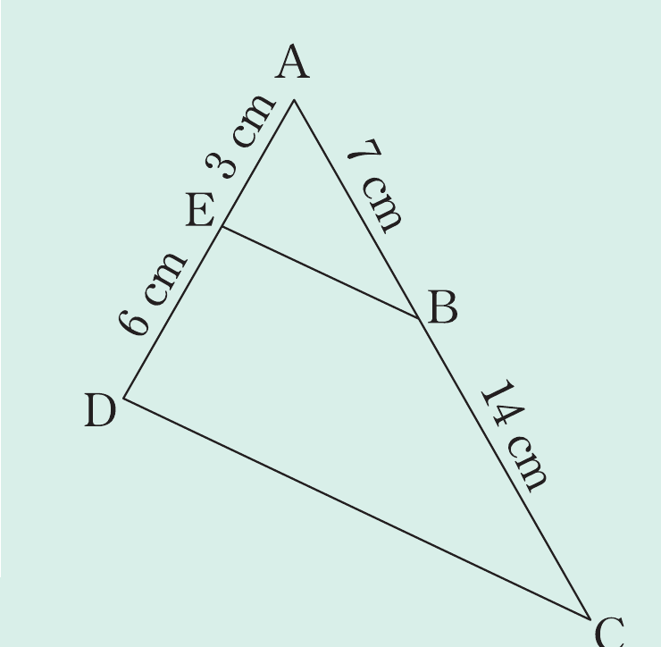

Example 3.10
Given the following triangles, prove that ΔABC and ΔXYZ are similar.

Example 3.11
Given the following figure, show that ΔACD ∼ ΔABE.

Ratio of the shortest sides:
Ratio of the longest sides:
BAE = CAD\; ().
Thus
and
BAE = CAD.
Therefore, ΔACD ∼ ΔABE. (SAS)